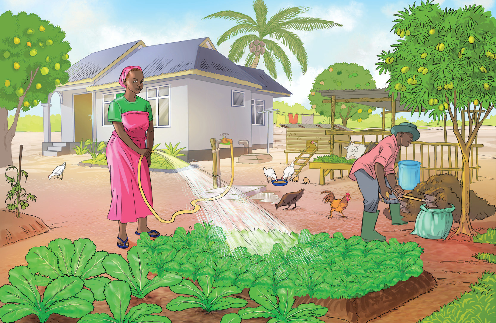

Figure 7.2: People doing physical activities through home gardening
Exercise 7.1:
Office workers spend most of their day sitting, with limited physical activities. Search for information from various sources, and then suggest the physical activities that can be performed by such individuals.

Activity 7.1
Mastering physical activities
Watch reliable online videos or read from other sources about physical activities.
(i) Describe one physical activity you have observed.
(ii) Explain the health benefits of the physical activity observed.
(iii) Perform a physical activity of your choice with your friend.
(iv) Write a report on the performed task.
FOOD AND HUMAN NUTRITION F1.indd 150 18/10/2024 18:27
150